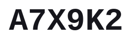

use case · basics
The whole idea, plainly. Box one word; MGP-STR reads it back and shows you its three-way vote — character, BPE and WordPiece heads — plus how confident the character head was about each glyph.

Drag to box a single word.
← Back to MGP-STR · Next: Practical →